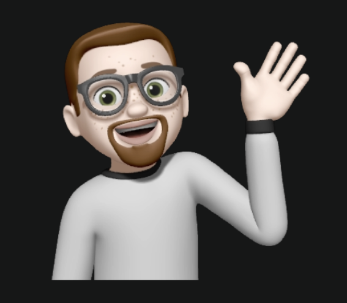

PRIMARY REFERENCE
Face, beard, glasses, expression
Face, beard, glasses, expression

With helmet on
Suit style reference
Suit style reference

3D face render
Facial features
Facial features
Space Journey Progression & Achievement System — Illustration Brief for Illustrator
QuitPo is a comprehensive porn addiction recovery app designed to help users break free from compulsive pornography use through psychological tools, community support, and behavioral interventions. Built on the scientific understanding that porn addiction typically requires 90 days for neural pathway rewiring.
The gamification system transforms the recovery journey into a visual, emotionally resonant experience through two interconnected mechanics:
The space theme connects directly to Alex, the AI companion, creating a cohesive brand experience where the user helps Alex return to Earth while Alex helps the user return to normal life.
1. ILLUSTRATOR (You) — Creates all artwork: backgrounds, Alex character, ship, planets, particles, objects
2. ANIMATOR (Separate person) — Takes your illustrations and builds Rive animations with state machines
Your deliverables: Layered illustration files (Adobe Illustrator .ai, Photoshop .psd, or Figma) with cleanly separated elements that the animator can rig and animate.
These are the core colors used throughout the QuitPo app. Use them consistently in all illustrations.
The space journey uses a dark theme with glowing accents. This is the primary visual style for all journey illustrations.
| Element | Hex Code | Usage |
|---|---|---|
| Deep Space Background | #0a0a1a | Primary backdrop for all space scenes |
| Space Secondary | #0f0f24 | Slightly lighter areas, depth variation |
| Card/Surface | #12122a | Ship hull, UI elements in space |
| Element | Hex Code | Usage |
|---|---|---|
| Primary Glow (Indigo) | #818CF8 | Ship engines, active elements, highlights |
| Secondary Glow (Teal) | #14B8A6 | Earth glow, destination indicators, healing |
| Accent Glow (Pink) | #F472B6 | Celebrations, milestones, special events |
| Success Glow | #22C55E | Stage complete, achievements, home |
| Warning Glow | #EAB308 | Course corrections, alerts, asteroids |
| Font | Usage | Notes |
|---|---|---|
| Space Grotesk | Headings, stage names, UI labels | Geometric, modern, space-appropriate |
| Inter | Body text, narratives, descriptions | Clean, readable, friendly |
Alex is the heart of QuitPo — both the astronaut making the space journey AND the AI companion in the app. When users chat with Alex, they're talking to this astronaut. Alex is warm, friendly, and supportive.
The 3D face reference has the beard WRONG — it only shows a goatee (hair around mouth only).
Alex should have a FULL beard covering cheeks, jawline, and chin, as shown in the sticker reference. Always use the sticker as the definitive guide for the beard.
| Pose | Description | When Used |
|---|---|---|
| Floating/Drifting | Relaxed zero-gravity pose, arms slightly out | Idle state, general journey |
| Working on Repairs | Tools in hand, focused expression, fixing ship | Early stages, ship repair narrative |
| Celebrating | Arms up, big smile, triumphant pose | Stage completion, achievements |
| Looking at Earth | Hand on viewport, hopeful expression, gazing at Earth | Later stages, approaching home |
| Sitting in Cockpit | Piloting position, hands on controls | Ship interior scenes |
| Sitting on Moon | Casual seated pose on lunar surface (like sticker) | Lunar station scene |
| Course Correction | Bracing, holding on, determined expression | Relapse/setback animations |
Alex's ship is a personal spacecraft — not military, not industrial. It's friendly, lived-in, and hopeful.
Alex was an astronaut on a routine mission when something went wrong. A malfunction sent the ship spiraling into the void, far from Earth, far from everyone Alex loved.
Now, stranded in the darkness of deep space, Alex must find the way back home. The journey is long — 90 days of travel through dangerous territory. But Alex isn't alone. Mission Control is still there, guiding the way.
And neither are you.
Being lost and finding your way home mirrors exactly what recovery feels like. Users aren't just tracking numbers — they're on a journey WITH Alex.
The journey metaphor emphasizes progress over perfection. Setbacks are "course corrections," not failures. The ship keeps flying.
The AI companion "Alex" IS this astronaut. When users chat with Alex in the app, they're talking to the astronaut making this journey. Alex's messages reference the voyage:
"Day 15. We're in the asteroid field now. Lots of close calls today, but we made it through together."
"I can see Earth now. Just a tiny blue dot. But it's there. We're going to make it."
"That was a rough one. We got knocked off course a bit. But the ship is still flying. Are you okay?"
Every element of Alex's space journey maps to a recovery concept:
| Space Journey | Recovery Journey | Visual Representation |
|---|---|---|
| Lost in deep space | Lost in addiction | Darkness, isolation, damaged ship |
| Earth = home, loved ones | Normal life, real connections | Blue planet growing larger |
| Ship damage | Brain affected by addiction | Flickering lights, broken systems |
| Ship repairs during journey | Neural pathways healing | Systems coming online, lights brightening |
| Navigation hazards | Triggers and urges | Asteroids, nebula fog, storms |
| Course corrections | Learning from setbacks | Ship adjusting trajectory (not exploding) |
| 90-day journey | 90-day brain rewiring period | Full voyage from void to Earth |
| Mission Control support | App, community, support system | Radio signals, communication |
Each stage requires a background illustration with Alex's ship. The animator will add movement, particles, and state transitions later. Your job is to create beautiful, evocative scenes that capture each stage's emotional meaning.
Visual Elements: Deep dark space (#0a0a1a), damaged ship with flickering lights, single distant star (Earth's direction), debris floating nearby
Color Palette: Deep blacks, dark blues (#0f0f24), faint amber from ship's emergency lights, single cold white star
Mood: Isolation, but with a spark of hope (the signal)
Recovery Meaning: The user has just started. They feel lost, broken. But they've taken the first step by downloading the app.
Visual Elements: Ship interior with lights coming on, Alex working on repairs, small viewport showing stars, tools floating
Color Palette: Warm interior lighting (amber, soft white), cool starfield outside through viewport
Mood: Activity, progress, first signs of hope
Recovery Meaning: First week survived. The initial chaos is settling. Basic routines are forming.
Visual Elements: Ship with engines glowing (#818CF8), thrust trail behind, leaving dark zone, stars becoming denser ahead
Color Palette: Indigo engine thrust (#818CF8), brightening starfield, dark void fading behind
Mood: Momentum, determination, forward motion
Recovery Meaning: One week complete. Momentum is building. The user is actively moving forward.
Visual Elements: Ship weaving through asteroids, close calls, tense navigation, rocks of varying sizes, warning lights
Color Palette: Grays and browns of asteroids, warning yellow (#F59E0B) accents, alert lighting, focused blue cockpit glow
Mood: Tension, focus, careful navigation
Recovery Meaning: Weeks 2-4 are full of triggers. The user must stay alert, make conscious choices to avoid danger.
Visual Elements: Colorful nebula gas clouds, limited visibility, ship moving slowly but steadily, soft diffused lighting
Color Palette: Purple (#818CF8), pink (#F472B6), teal (#14B8A6) nebula clouds, soft ethereal glow, dreamy atmosphere
Mood: Peaceful but uncertain, beautiful but disorienting, trust
Recovery Meaning: One month in. Things feel different — better, but unfamiliar. Brain fog is lifting. Trust the process.
Visual Elements: Clear starfield, tiny Earth visible in the distance (blue dot), ship cruising smoothly, sense of openness
Color Palette: Deep space black, bright crisp stars, small blue-green Earth dot with soft glow (#14B8A6)
Mood: Clarity, hope renewed, destination visible
Recovery Meaning: The fog lifts. Users often report clarity, energy, feeling "normal" for the first time.
Visual Elements: Moon in view (gray, detailed), Earth much larger, ship approaching carefully, sense of gravity
Color Palette: Gray moon surface with craters, blue-white Earth, careful lighting, home feels tangible
Mood: Anticipation, caution, almost there
Recovery Meaning: Two months in. Major progress, but complacency is dangerous. Stay focused.
Visual Elements: Earth fills most of screen, ship in orbit, oceans and continents visible, atmospheric glow, preparing for landing
Color Palette: Blue oceans, green/brown continents, white clouds, orbital glow, warm atmosphere edge
Mood: Awe, accomplishment, beauty, anticipation of landing
Recovery Meaning: The final stretch. The user can feel the change. They're different now. 90 days felt impossible once.
Visual Elements: Ship landed on Earth (green field or landing pad), hatch open, sunlight streaming in, silhouettes of people waiting, blue sky
Color Palette: Warm sunlight (golden), green grass, blue sky, success green (#10B981), hopeful and alive
Mood: Triumph, relief, joy, new beginning
Recovery Meaning: 90 days complete. Neural rewiring achieved. Life continues from a place of strength.
Between the main stages, Alex makes stops at planets and space stations to collect essential ship components. Each item has a real astronaut purpose AND a recovery metaphor. This is a V1.5 feature — not needed for initial launch.
When Alex's ship was damaged, several critical systems were lost. Throughout the journey, Alex must find these parts:
| Ship Part | Astronaut Need | Recovery Metaphor |
|---|---|---|
| Navigation Computer | Find the course back to Earth | Clarity — knowing your direction |
| Fuel Cells | Power to keep moving | Energy & motivation to continue |
| Communication Array | Contact with Mission Control | Connection — not being isolated |
| Oxygen Recycler | Breathe and survive | Self-care, breathing exercises |
| Hull Plating | Protect from impacts | Resilience against triggers |
| Solar Panels | Renewable energy source | Healthy habits that sustain you |
Scene: Red planet surface, abandoned outpost structure, ship landing, Alex retrieving equipment from dusty station
Scene: Massive gas giant fills background, floating station, ship docking, refueling operation
Scene: Ship flying carefully through Saturn's rings, grabbing satellite dish, ice particles floating
Scene: Saturn's moon Titan, orange haze atmosphere, icy surface, base with domes, Alex doing breathing gesture
Scene: Distant blue planet, cold remote feeling, ship repairs, installing new armor plating
Scene: Moon base, Earth visible large in sky (almost home!), Alex sitting on moon surface like sticker, installing panels
When a user relapses, it's called a "course correction" — NOT a failure. The ship gets knocked off course but keeps flying. Alex doesn't die. The journey continues. This is crucial for maintaining hope.
Key insight: Alex remembers the journey. The user's experience, lessons learned, days of healing — those aren't erased. They're building resilience.
When a relapse happens:
| Stage | What Happens | Visual Description |
|---|---|---|
| The Void | Signal lost briefly | Static effect, screen flickers, signal returns with "reconnecting" animation |
| First Light | Power fluctuation | Lights flicker off then back on, systems resetting |
| Leaving Drift | Engine stalls | Engine glow cuts out, then restarts with determination |
| Asteroid Field | Minor collision | Impact shake, warning lights flash yellow, ship stabilizes |
| Nebula | Got turned around | Compass spinning, disorientation, then reorienting to course |
| Clear Space | Unexpected storm | Storm clouds appear, turbulence, ship pushed back but recovers |
| Moon's Shadow | Missed approach | Trajectory line adjusting, going around for another pass |
| Earth Orbit | Wrong entry angle | Abort landing sequence, pull up, reorbit animation |
"I lost you for a moment. But I'm still here. Let's try again."
"A setback. The ship needs to recalibrate. But we know what to do now."
"We took a hit. Some damage, but the ship holds. Recalculating route."
"I lost my bearings in here. But I've found the path again."
Key tone: Compassionate, forward-looking, never shaming. The journey continues.
What you need to create. The animator will take these and build Rive animations.
| Asset Type | Description | Quantity | Format |
|---|---|---|---|
| Stage Backgrounds | 9 main journey stage backgrounds with appropriate space scenes | 9 | Layered AI/PSD/Figma |
| Alex Character | Astronaut with separable body parts for animation rigging | 1 (multiple poses) | Layered AI/PSD |
| Alex's Ship | Spacecraft with separate parts (hull, engines, windows, lights) | 1 (multiple states) | Layered AI/PSD |
| Particles & Effects | Stars, nebula clouds, engine flames, sparks, confetti | ~10-15 | PNG transparent |
| Planet Backgrounds | 6 planet stop locations (V1.5) | 6 | Layered AI/PSD |
| Ship Parts | 6 collectible items (nav computer, fuel cells, etc.) | 6 | Layered AI/PSD |
For the animator to rig animations, elements must be on separate layers:
Ship the app with these ~15 assets. Static images acceptable — animations enhance but don't block launch.
| # | Asset | Priority |
|---|---|---|
| 1-9 | 9 Journey Stage Backgrounds (The Void through Homecoming) | MUST HAVE |
| 10 | Alex character (rigged with multiple poses) | MUST HAVE |
| 11 | Ship exterior (layered, multiple states) | MUST HAVE |
| 12 | Ship interior cockpit view | SHOULD HAVE |
| 13 | Celebration elements (confetti, stars overlay) | SHOULD HAVE |
| 14 | Course correction elements (warning lights, shake effect) | SHOULD HAVE |
| 15 | Engine flame/thrust effects | SHOULD HAVE |
~8 additional illustrations for planet stops feature.
~12+ additional variations for enhanced experience.
Your illustrations will be used by the animator to create Rive animations. Here are the technical requirements.
| Property | Value |
|---|---|
| Artboard Size | 1280 x 720 px (16:9) |
| Character Height | ~300-400 px |
| Ship Width | ~400-600 px |
| Color Mode | RGB |
| Export Resolution | @2x minimum |
The animator will create Rive files with these state machines — knowing this helps you design assets that work well for animation:
| State | Description | What It Needs |
|---|---|---|
idle |
Default looping animation | Ship floating gently, stars twinkling, subtle movement |
transition_in |
Entry animation when stage reached | Ship flying into scene, background appearing |
transition_out |
Exit when advancing to next stage | Ship flying out, warp effect |
celebrate |
Milestone celebration | Confetti, Alex cheering, ship lights flashing |
course_correction |
Setback animation (relapse) | Ship shaking, warning lights, then stabilizing |